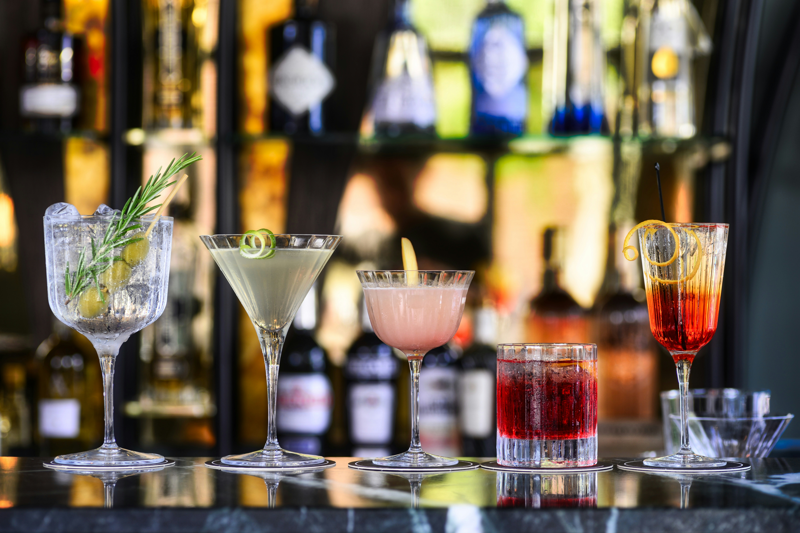

Si eres amante de los cócteles, hay cinco bebidas clásicas que nunca pasan de moda y que los expertos recomiendan para cualquier ocasión. Estos cócteles combinan sabor, historia y popularidad internacional, y son ideales tanto para principiantes como para quienes buscan experimentar con bartending en casa.
1. Martini – El icónico cóctel de ginebra y vermut, servido frío y adornado con una aceituna o un twist de limón, sigue siendo el favorito de quienes buscan elegancia y simplicidad.
2. Margarita – Mezcla de tequila, triple sec y jugo de limón, la margarita es refrescante y perfecta para reuniones veraniegas o celebraciones con amigos.
3. Mojito – Este clásico cubano combina ron, hierbabuena, azúcar, lima y soda, ofreciendo un sabor fresco y dulce que lo hace irresistible.
4. Piña Colada – Dulce y tropical, este cóctel de ron, piña y crema de coco transporta a cualquier persona directamente a la playa con cada sorbo.
5. Negroni – Para quienes disfrutan de sabores más amargos y complejos, el Negroni mezcla ginebra, vermut rojo y Campari, creando un cóctel sofisticado y lleno de carácter.
Estos cinco cócteles no solo son deliciosos, sino que también representan algunas de las tendencias más populares en bares y restaurantes del mundo, demostrando que la combinación de tradición y sabor nunca pasa de moda.